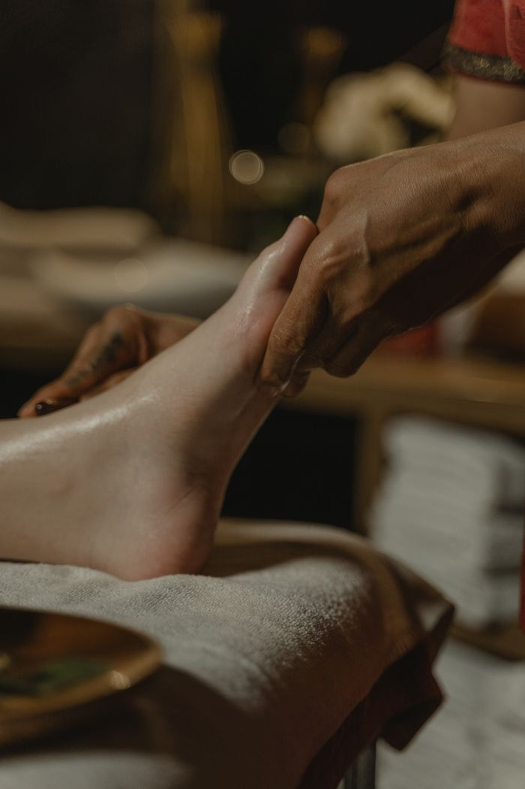
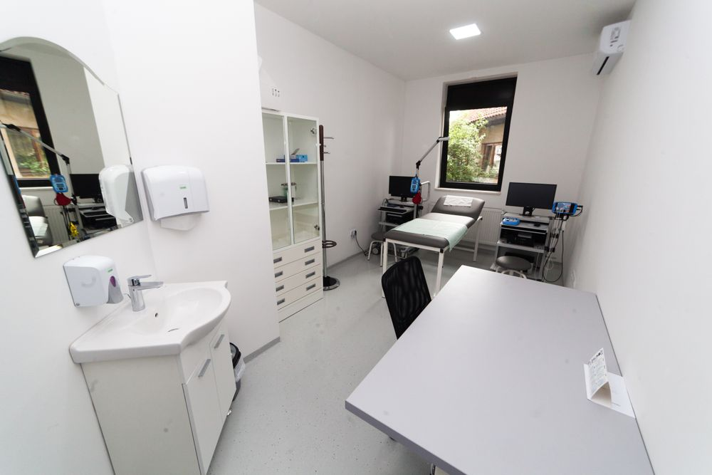
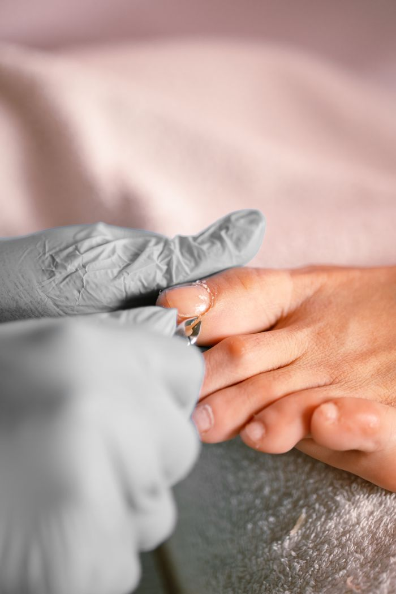
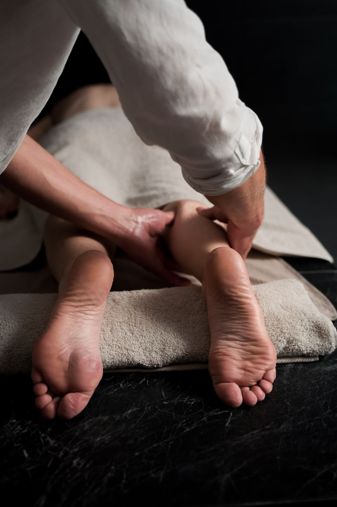

Podologia preventiva
Cuidados regulares para manter a saúde dos pés e prevenir desconfortos.
Um olhar atento para a saúde dos seus pés, com acolhimento em cada etapa do cuidado.
Uma pausa para você
Na VerdePasso, acreditamos que bem-estar também é poder caminhar sem desconforto. Nosso cuidado começa pela escuta e pelo respeito às necessidades de cada pessoa.
↗
Conheça os cuidados apresentados pela VerdePasso. Cada atendimento é definido após uma avaliação individual.

Cuidados regulares para manter a saúde dos pés e prevenir desconfortos.

Atenção especializada para unhas e calosidades, com cuidado e delicadeza.

Uma pausa de cuidado para trazer conforto e leveza ao seu dia a dia.
Imagens ilustrativas. Os cuidados são definidos após uma avaliação individual.
Informações sobre os cuidados e os canais disponíveis no site.
Use o botão de agendamento pelo WhatsApp. Ele abre uma conversa com uma mensagem pronta para você revisar e enviar.
Os cuidados são definidos após uma avaliação individual.
A VerdePasso apresenta podologia preventiva, cuidados com unhas e calosidades e bem-estar dos pés. Veja a seção de cuidados.
Não. O formulário é demonstrativo: valida os campos na página e não transmite nem envia os dados.
Converse com a VerdePasso e tire suas dúvidas sobre os cuidados apresentados.
Use o formulário para testar as validações. Os dados permanecem nesta página e nenhuma mensagem é enviada.